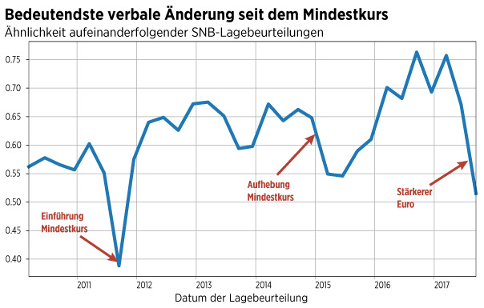

For the Swiss National Bank, everything stays the same (except that it doesn't)
How Switzerland's central bank struggles to keep a sense of continuity in turbulent economic times.
Monetary policy has been a wild ride in Switzerland. In 2011, the Swiss National Bank (SNB) fixed the exchange rate of the Franc to the Euro. It was the first time in fourty years this had happened. The SNB defended the peg visciously, only to drop it again in January 2015. The move sent the currency to new highs, causing the famous 'franc shock'.
In the midst of these turbulent times stand the quarterly statements, in which the bank communicates its assessment of the economic situation and the proper monetary stance. An analysis of these statements shows that the SNB has reacted in a particular way to the financial stir: By emphasizing continuity, consistency and steadyness.
Smooth communication
A first indication lies in the length of these statements. In 2011, when the SNB first established a currency floor to limit the Franc's appreciation, the bank also modified its rhythm of communication. For a number of years, the bank had always published long statements in summer and winter and short statements in spring and autumn. This changed in late 2011, when the variation in length was abolished and consecutive statements were crafted to look much more alike.
Leveling the length of texts might be seen as a negligible detail. But the modification, which hasn't been noticed or discussed by the media so far, fits into a broader communicative pattern. It is a pattern that can be detected in a second metric: The semantic similarity of the SNB statements over time.
The term refers to a number that represents the lexical overlap of two text. This number takes the value of one if the texts use the same words for the same number of times and takes the value of zero if the two texts have no words in common whatsoever. The SNB's statements show an upward trend in semantic similarity over time.

Why would consecutive statements become more and more similar? An obvious explanation is that starting in 2011 the SNB's statements all have the same length, which produces greater similarity. But this cannot be the only reason, as the similarity curve is not step-shaped, but rises steadily. The fact that the curve only reaches its peak in 2016 suggests an ongoing effort to minimize variations in the central bank's communication.
Note that the semantics curve also offers no hint of the second major policy shift in 2015, when the SNB dropped the peg. The semantic similarity of the statements before and after this event is remarkable in itself. It offers a clear hint to the SNB's discoursive strategy: Dispellig the notion of change and portraying things to remain the same.
Words are important
The desire to shape its public perception is understandable. Since the financial crisis, central banks have been under stress. They have been thrust into a new world, where interest rate policy is no longer available and new tools had to be invented. Language has become an important element in post-crisis monetary policy with its heavy reliance on verbal interventions and forward guidance.
In the Swiss context, this has resulted in mantra-like repetitions of the same sentences over multiple policy meetings and even years ("The Swiss Franc is strongly overvalued"). The SNB has tried to signal continuity. A third indication for this is the frequency of certain words in the central bank's statement. Particular words like "still", "unchanged" or "stays" have appeared in greater numbers over recent years.

A number of commentators have expressed uneasiness with the SNB, with its policies and its communication over the last years. The reason for this uneasiness is now clear: It results in part from the fact that Switzerland's central bankers are engaged in a linguistic struggle, trying to convey a sense of stability that stands square to actual reality.
It is unclear whether the SNB's leaders have adopted this discoursive strategy consciously or whether it is a mere side-effect of their actions ((note: I haven't asked the SNB for a quote on this research yet)). In any case, we are left with a somewhat perplexing observation: That no matter what happens, everything stays the same at the SNB - even if it clearly doesn't.